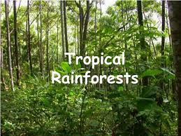
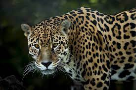
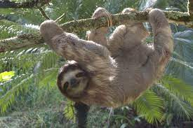
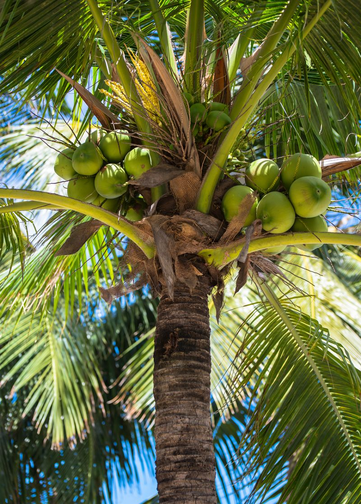
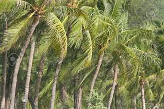
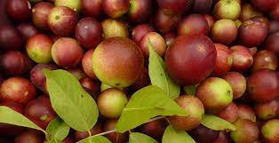

Home Page
The Forest
Tropical Rainforest
Amazon Forest
The Tropical Rainforest

Tropical rainforests are the most biologically diverse terrestrial ecosystems in the world. The Amazon rainforest is the world's largest tropical rainforest. It is home to around 40,000 plant species, nearly 1,300 bird species, 3,000 types of fish, 427 species of mammals, and 2.5 million different insects.
A rainforest is an area of tall, mostly evergreen trees and a high amount of rainfall.
Tropical Forest Animals
- Jaguar

- Sloths

- Toucans

Tropical Forest Plants
- Coconut Tree

The coconut tree is a member of the palm tree family and the only living species of the genus Cocos. The term "coconut" can refer to the whole coconut palm, the seed, or the fruit, which botanically is a drupe, not a nut.
The coconut tree is a highly iconic tree in many tropical destinations of the world, it is known for the large coconut fruit that hangs from the top of the tree. Conconut palms have adapted to grow extremely quickly to receive the most sun possible, they are also very efficient at spreading seeds for species survival. The tree itself grows at a medium pace and after germinating it produces a bascal trunk that allows cocunut seeds to be produced in all kinds of light and heat conditions, making the tree extremely well adapted to many climates. The coconuts themselves are extremely effective as seeds, this is because the tough shell allows them to be transferred large distances and when the seeds require no dormancy or nutrients to germinate and grow, everything is provided inside of the coconut shell.
- Palms Tree

The Arecaceae is a family of perennial, flowering plants in the monocot order Arecales. Their growth form can be climbers, shrubs, tree-like and stemless plants, all commonly known as palms. Those having a tree-like form are called palm trees.
Palms have woody stems, no branches and surface roots at the trunk base and usually grow in moist locations in the rainforest.
- Camu Camu

Myrciaria dubia, commonly known as camu-camu, caçari, araçá-d'água, or camocamo, is a species of plant in the family Myrtaceae. It is a small bushy riverside tree from the Amazon rainforest in Peru and Brazil, which grows to a height of 3–5 m and bears a red/purple cherry-like fruit.
- The camu camu plant (Myrciaria dubia) is best known for the camu camu fruit, which is a small tart citrus fruit. The plant grows as a small shrub near rivers and lakes. Unusually, the fruit is dispersed by fish. The fruit is used to flavor desserts, sauces and is a favorite juice in Amazon regions. The camu camu fruit itself is very high in Vitamin C and has one of the highest concentrations of any fruit. Some protected areas to see camu camu include the Pacaya Samiria National Reserve and the Tamshiyacu Tahuayo Reserve in northern Peru.